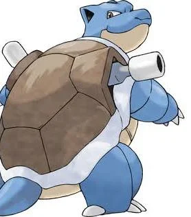

Blastoise are large, tortoise-like Pokémon with some features similar to those of its pre-evolved forms. Blastoise has a large blue body, cream-colored stomach, small fat arms and legs, and a large brown shell rimmed with white, featuring its water cannons. It is now noticeably bulkier than its previous evolutions. Like its pre-evolved forms, Blastoise has a shell which covers its entire body, which it can also be withdrawn into. Contrary to Squirtle and Wartortle, Blastoise has large, water cannons that are located on the top left and right sides. The water that comes out of the cannons is capable of punching holes through thick steel.